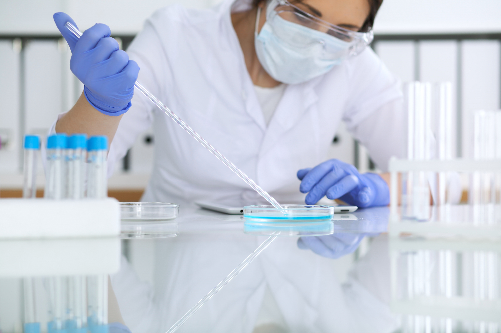
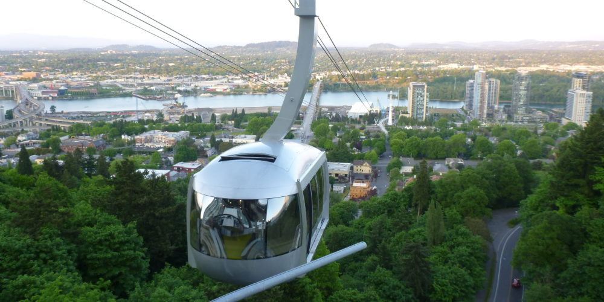

Didactic Mentors
All PSI students are matched one-on-one with a didactic mentor to guide them through the 16-week didactic course.
About the PSI ProgramPartnership for Scientific Inquiry
The Partnership for Scientific Inquiry (PSI) program introduces high school students to the scientific process, encouraging their scientific passion and fostering a relationship between researchers and the local community.

Program Overview
Our program accepts Sophomore, Junior, and Senior high school students who are interested in pursuing careers in medicine or biomedical research through a 16-week course from January to May.
Students are introduced to the scientific process and gain access to research scientists from OHSU and other Portland research institutes.
We meet for two hours on Wednesdays (January-May) for a lecture series and to learn about ongoing research projects conducted by scientists at Oregon Health & Science University (OHSU).
Elements of the Program
All PSI students are matched one-on-one with a didactic mentor to guide them through the 16-week didactic course.
About the PSI Program
Students may elect to join a scientific laboratory or perform clinical research over the summer.
Important Dates
As of 2023, we host a poster symposium at the end of the summer internship series to showcase the students' research and allow them to practice their presentation skills.
Previous Lectures
Our Story
This includes having parents without graduate-level education and those from low socioeconomic status. Our goal is to create a level playing field where talent, curiosity, and dedication are the primary criteria for success, thus inspiring future leaders in science from different backgrounds.
Testimonials